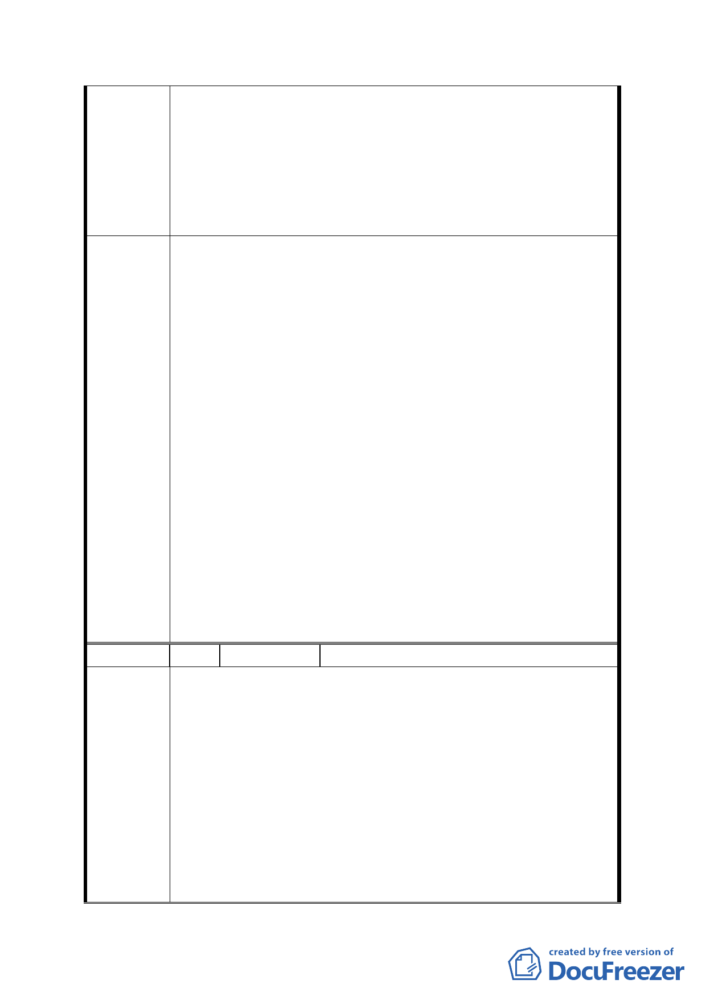

整體開發，已經損害本公司權益，有違公務員應依法維
護人民權益之義務。
三、因此、本公司對於主席做成之會議決議與事實不符之處
提出強烈之異議，並祈貴會斟酌各發言委員有關捐地及
回饋問題應合併處理之要求，於本次會議中詳實記載各
委員之提議及未經審議之事項，以符合委員會審議之真
實過程。
本會第655次委員會議確認上（第654）次委員會議紀錄，決
議：
一、確認上(654)次委員會議紀錄，無修正事項，予以確定。
二、上(654)次委員會議審議事項一「修訂「『修訂台北市土
地使用分區(保護區、農業區除外)計畫(通盤檢討)案』
內有關八德路四段、東寧路、縱貫鐵路、八德路四段106
巷所圍地區(原唐榮鐵工廠)土地使用計畫案」開發方式
細部計畫案」，申請單位為臺北市政府，惟京華城股份有
委員會
決議
限公司等就會議決議提出異議陳情。有關異議書提及「委
員確實不斷提出『解除整體開發後回饋應重新審視』、『威
京幫忙捐百分之三十的權利變換價值』、『分開後各繳各
的回饋金』、『個別計畫，但是不要影響原來捐獻的百分
之三十的權益』、『需有彌補機制、如折算容積率等』、『開
發人需自行捐贈』等提議，並有委員要求將其提案列入
審議結論」，以及「主席…強行裁示通過都發局所提之計
畫書」等內容，經主席詢問委員對異議內容之意見，委
員表示並無該等情事，經討論後仍維持原決議文字。本
次京華城股份有限公司等陳情意見之回應處理，請都委
會正式函覆，併同納入本次會議紀錄，以利後續查考。
編 號 2-b 陳情人 京○建設開發股份有限公司
主旨：為對貴會於民國103年1月23日所召開之第654次委員會
審議「修定「『修訂台北市土地使用分區（保護區、農
業區除外）計畫（通盤檢討）案』內有關八德路四段、
東寧路、縱貫鐵路，八德路四段一○六巷所圍地區（原
唐榮鐵工廠）土地使用計畫案」開發細部計畫案」過程
陳情理由
中主席無視各委員意見，強行裁示通過台北市都市發展
局所提計畫案，損害本公司權益，提出強烈異議，詳如
說明，請查照。
說明：
一、旨揭第654次委員會議審議過程中，委員確有提「解除
整體開發後回饋應重新審視」、「威京幫忙捐百分之三十
-3-